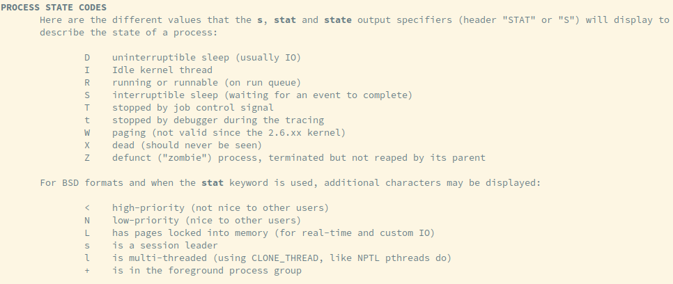
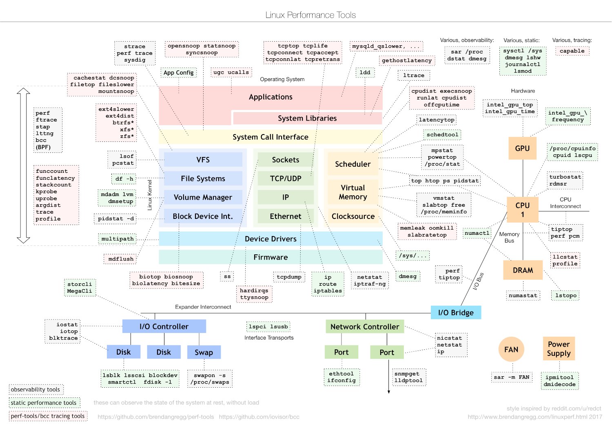

Linux性能优化
目录
1 系统平均负载
平均负载是指单位时间内，系统处于可运行状态和不可中断状态的平均进程数，也就是平均活跃进程数。
- running or runnable (on run queue): 可运行状态的进程是指正在使用 CPU 或者正在等待 CPU 的进程，状态码 R
- uninterruptible sleep (usually IO): 不可中断状态的进程则是正处于内核态关键流程中的进程，状态码 D
2 CPU性能分析
2.1 上下文切换
2.1.1 特权模式切换
系统调用过程通常称为特权模式切换。需保存和恢复寄存器、PC的状态。
2.1.2 进程上下文切换
进程上下文切换相比特权模式切换，还需要保存进程的栈、虚拟内存。
进程上下文切换都需要几十纳秒到数微秒的 CPU 时间。这个时间还是相当可观的，特别是在进程上下文切换次数较多的情况下， 很容易导致 CPU 将大量时间耗费在寄存器、内核栈以及虚拟内存等资源的保存和恢复上，进而大大缩短了真正运行进程的时间。
Linux 为每个 CPU 都维护了一个就绪队列，将活跃进程（即正在运行和正在等待 CPU 的进程）按照优先级和等待 CPU 的时间排序， 然后选择最需要 CPU 的进程，也就是优先级最高和等待 CPU 时间最长的进程来运行。
- 自愿上下文切换：无法获取资源而导致
- 非自愿上下文切换：被系统强制调度而导致
2.1.3 线程上下文切换
线程是调度的基本单位，而进程则是资源拥有的基本单位。进程只是给线程提供了共享的虚拟内存、全局变量等资源。
- 当进程拥有多个线程时，这些线程会共享相同的虚拟内存和全局变量等资源，线程上下文切换时不需要修改。
- 线程也有自己的私有数据，比如栈和寄存器等，这些在上下文切换时也是需要保存的。
2.1.4 中断上下文切换
为了快速响应硬件的事件，中断处理会打断进程的正常调度和执行，转而调用中断处理程序响应设备事件。
- 对同一个 CPU 来说，中断处理比进程拥有更高的优先级。
- 中断上下文指的是包括内核态中断服务程序执行所必需的状态，包括 CPU 寄存器、内核堆栈、硬件中断参数等。
- 内核调度中断频率配置
grep 'CONFIG_HZ=' /boot/config-$(uname -r)250Hz，即每秒钟触发 250 次时间中断 - 用户节拍率 USER_HZ 总是固定为 100Hz， 即10ms一次时间中断
2.2 CPU使用率
CPU 使用率，就是除了空闲时间外的其他时间占总 CPU 时间的百分比。 /proc/stat 提供 CPU 和任务统计信息。
- 只关注cpu，执行
cat /proc/stat | grep cpu - 每列代表不同场景下 CPU 的累加节拍数，它的单位是 USER_HZ，也就是 10 ms （即不同场景下的 CPU 时间）
单位 10ms cpu 100898 490 31309 2195013 10269 0 9757 0 0 0 cpu0 13066 99 4666 273267 1044 0 4636 0 0 0 cpu1 12794 48 4203 274005 1114 0 2619 0 0 0 cpu2 12809 86 3815 274503 1218 0 1262 0 0 0 cpu3 12629 33 3708 275046 993 0 576 0 0 0 cpu4 12608 67 3700 274824 1158 0 220 0 0 0 cpu5 12046 36 3833 274827 1385 0 182 0 0 0 cpu6 12547 55 3753 274612 1438 0 147 0 0 0 cpu7 12395 63 3629 273926 1915 0 114 0 0 0
man proc查找/proc/stat查看每列所表示的含义- user, nice, system, idle, iowait, irq(interrupts), softirq, steal, guest, guest_nice
- nice: 代表低优先级用户态 CPU 时间，也就是进程的 nice 值被调整为 1-19 之间时的 CPU 时间； nice 可取值范围是 -20 到 19，数值越大，优先级反而越低
- iowait: 代表等待 I/O 的 CPU 时间
- irq: 代表处理硬中断的 CPU 时间
- steal: 代表当系统运行在虚拟机中的时候，被其他虚拟机占用的 CPU 时间
- guest: 运行虚拟机的 CPU 时间
2.2.1 使用率计算
/proc/stat 统计的是开机以来的平均 CPU 使用率。为了计算 CPU 使用率，性能工具一般都会取间隔一段时间（比如 3 秒）的两次值，作差后，再计算出这段时间内的平均 CPU 使用率。
\[usage=1 - \frac{idle_t-idle_{t-1}}{total_t-total_{t-1}}\]
2.2.2 进程相关
/proc/[pid]/stat
2.2.3 总结
- 用户 CPU 和 Nice CPU 高，应着重排查进程的性能问题。
- 系统 CPU 高，应着重排查内核线程或者系统调用的性能问题。
- I/O 等待 CPU 高，应该着重排查系统存储是不是出现了 I/O 问题。
- 软中断和硬中断高，说明软中断或硬中断的处理程序占用了较多的 CPU，所以应该着重排查内核中的中断服务程序。
2.3 软中断/硬中断
中断处理程序的上部分和下半部可以理解为：
- 上半部直接处理硬件请求，也就是硬中断，主要是负责耗时短的工作，特点是快速执行
- 下半部是由内核触发，也就说软中断，主要是负责上半部未完成的工作，通常都是耗时比较长的事情，特点是延迟执行。
- 软中断通常以内核线程的方式运行，每个 CPU 都对应一个软中断内核线程。ksoftirqd/0 即为 0 号 CPU 对应的软中断内核线程的名字。
ps aux | grep softirq查看 - 软中断不仅包括了硬件设备中断处理程序的下半部，一些内核自定义的事件也属于软中断，比如内核调度和 RCU 锁（Read-Copy Update）等。
- 软中断通常以内核线程的方式运行，每个 CPU 都对应一个软中断内核线程。ksoftirqd/0 即为 0 号 CPU 对应的软中断内核线程的名字。
2.4 进程状态

- R 是 Running 或 Runnable 的缩写，表示进程在 CPU 的就绪队列中，正在运行或者正在等待运行。
- D 是 Disk Sleep 的缩写，也就是不可中断状态睡眠（Uninterruptible Sleep）
- 一般表示进程正在跟硬件交互(iowait升高)，并且交互过程不允许被其他进程或中断打断。
- 为了保证进程数据与硬件状态一致，并且正常情况下，不可中断状态在很短时间内就会结束
- Z 是 Zombie 的缩写，表示僵尸进程，也就是进程实际上已经结束了，但是父进程还没有回收它的资源（比如进程的描述符、PID 等）。
- 父进程正常应该通过系统调用 wait() 或者 waitpid() 等待子进程结束，回收子进程的资源
- 子进程在结束时，会向它的父进程发送 SIGCHLD 信号，所以，父进程还可以注册 SIGCHLD 信号的处理函数，异步回收资源。
- S 是 Interruptible Sleep 的缩写，也就是可中断状态睡眠，表示进程因为等待某个事件而被系统挂起。当进程等待的事件发生时，它会被唤醒并进入 R 状态。
- I 是 Idle 的缩写，也就是空闲状态，用在不可中断睡眠的内核线程上。前面说了，硬件交互导致的不可中断进程用 D 表示，但对某些内核线程来说，它们有可能实际上并没有任何负载，用 Idle 正是为了区分这种情况。要注意，D 状态的进程会导致平均负载升高， I 状态的进程却不会。
- T 或者 t，也就是 Stopped 或 Traced 的缩写，表示进程处于暂停或者跟踪状态。
- 暂停恢复：SIGSTOP暂停，SIGCONT恢复
- GDB进断点中断时，变为跟踪状态
- X，也就是 Dead 的缩写，表示进程已经消亡，所以你不会在 top 或者 ps 命令中看到它。
3 实战
3.1 中断上下文切换
- vmstat 查看每秒中断次数过多
检查中断类型
中断发生在内核态，无法用用户态的
pidstat查看，直接读取/proc/interruptswatch -d cat /proc/interrupts # 发现RES最多 <- 关键； watch会标注前后两次的变化 watch -d grep "Rescheduling interrupts" /proc/interrupts
重调度中断（RES），这个中断类型表示，唤醒空闲状态的 CPU 来调度新的任务运行。 这是多处理器系统（SMP）中，调度器用来分散任务到不同 CPU 的机制，通常也被称为处理器间中断（Inter-Processor Interrupts，IPI）。
3.1.1 情况分析建议
- 自愿上下文切换变多了，说明进程都在等待资源，有可能发生了 I/O 等其他问题。
- 非自愿上下文切换变多了，说明进程都在被强制调度，也就是都在争抢 CPU，说明 CPU 的确成了瓶颈。
- 中断次数变多了，说明 CPU 被中断处理程序占用，还需要通过查看 /proc/interrupts 文件来分析具体的中断类型。
3.2 I/O 问题排查
- 需要先用 dstat、pidstat 等工具，确认是不是磁盘 I/O 的问题，找到哪个进程导致了 I/O 问题
- 等待 I/O 的进程通常为不可中断状态，用 ps 找到状态为 D 的可疑进程
- 可以用 strace 直接分析可疑进程的系统调用
3.3 僵尸进程排查
- pstree 找到父进程
- 检查父进程是否有 wait() / waitpid() 的调用，或者处理了 SIGCHLD 信号
4 工具

4.1 压力测试工具
4.1.1 sysbench
sysbench 是一个多线程的基准测试工具，一般用来评估不同系统参数下的数据库负载情况。可用来模拟上下文切换过多的问题。
安装： sudo apt install sysbench
sysbench --threads=10 --max-time=300 threads run
4.1.2 stress
压力测试工具，模拟异常进程 sudo apt install stress
# CPU密集型模拟 stress --cpu 1 --timeout 600 # I/O密集型模拟 stress -i 1 --timeout 600 # 模拟大量进程，等待CPU调度 stress -c 16 -- timeout 600
4.1.3 ab
Web服务器性能测试工具，Apache HTTP server benchmarking tool
# 并发10个请求测试Web服务器性能，总共测试100个请求 ab -c 10 -n 100 http://192.168.0.10:10000/
4.2 问题追踪工具
4.2.1 watch
持续执行指定命令输出，并标注出变化
watch -d uptime
watch -d cat /proc/interrupts
watch -d grep "Rescheduling interrupts" /proc/interrupts
4.2.2 sysstat工具集
mpstat: 多核CPU性能分析工具
# -P ALL 表示监控所有CPU，后面数字5表示间隔5秒后输出一组数据 mpstat -P ALL 55
pidstat: 进程CPU性能分析工具
# 间隔5秒后输出一组数据 pidstat -u 5 1 # -w参数表示输出进程切换指标，而-u参数则表示输出CPU使用指标 pidstat -w -u 1 # pidstat 默认输出进程指标，-t 可输出线程指标 pidstat -t 8929 # -d 展示 I/O 统计数据，间隔 1 秒输出 3 组数据 pidstat -d 1 3
- cswch/s 每秒自愿上下文切换（voluntary context switches）的次数；指进程无法获取所需资源，导致的上下文切换
- nvcswch/s 每秒非自愿上下文切换（non voluntary context switches）的次数；是指进程由于时间片已到等原因，被系统强制调度，进而发生的上下文切换
vmstat: 查看系统整体
# 每隔5秒输出1组数据 --unit=M 可用于对齐输出 vmstat --unit=M 5
- cs（context switch）是每秒上下文切换的次数
- in（interrupt）则是每秒中断的次数
- r（Running or Runnable）是就绪队列的长度，也就是正在运行和等待 CPU 的进程数
- b（Blocked）则是处于不可中断睡眠状态的进程数
4.2.3 dstat
dstat 吸收了 vmstat、iostat、ifstat 等几种工具的优点，可以同时观察系统的 CPU、磁盘 I/O、网络以及内存使用情况。
sudo apt install dstat
4.2.4 perf
基于事件记录的动态追踪工具
perf top能够实时显示占用 CPU 时钟最多的函数或者指令，因此可以用来查找热点函数- Overhead 该符号的性能事件在所有采样中的比例，用百分比来表示。
- Shared Object 是该函数或指令所在的动态共享对象（Dynamic Shared Object），如内核、进程名、动态链接库名、内核模块名等。
[ ]是动态共享对象的类型； [.] 表示用户空间的可执行程序、或者动态链接库，而 [k] 则表示内核空间。- Symbol 是符号名，也就是函数名。当函数名未知时，用十六进制的地址来表示。
perf record/report-g开启调用关系的采样，方便我们根据调用链来分析性能问题。-p指定pid
4.2.5 perf-tools工具集
https://github.com/brendangregg/perf-tools
execsnoop: 是一个专为短时进程设计的工具，它通过 ftrace 实时监控进程的 exec()
4.2.6 strace
跟踪进程 系统调用 的工具
4.2.7 pstree
# -a 表示输出命令行选项，p表示PID s表示指定进程的父进程 pstree -aps 3084
4.3 重要文件
/proc/interrupts: 硬中断运行情况/proc/stat: CPU和任务统计信息cat /proc/stat | grep ^cpu/proc/[pid]/stat: 进程统计信息
4.4 /proc/softirqs
软中断运行情况，类型说明:
- NET_RX: 网络接收中断
- NET_TX: 网络发送中断